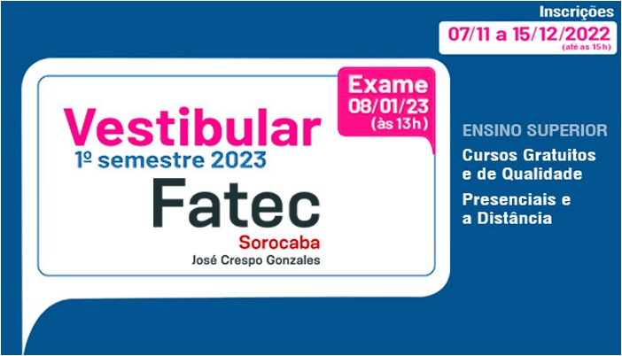

SELECIONE UM CURSO PARA VER MAIS DETALHES
Análise e Desenvolvimento de Sistemas
Eletrônica Automotiva
Fabricação Mecânica
Gestão Empresarial - EAD
Gestão da Qualidade
Logística
Manufatura Avançada
Processos Metalúrgicos
Polímeros
Projetos Mecânicos
Sistemas Biomédicos
OK
